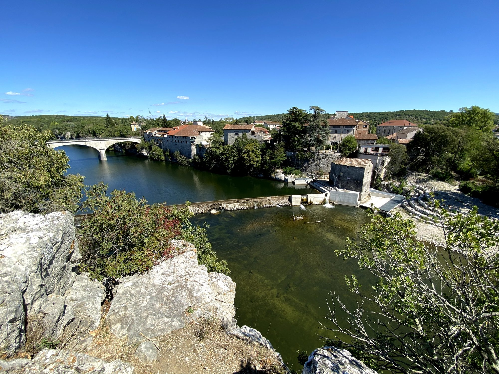

About fifty minutes from Les Cabritas, Ruoms and Labeaume form a pair of villages typical of southern Ardèche, less than 10 km from the Gorges de l'Ardèche and Vallon-Pont-d'Arc. One impresses with its ramparts, the other with its gardens clinging to the cliff: two complementary moods for a single day out.

Ruoms, the walled village
Founded in the Middle Ages and encircled by its old ramparts, the village of Ruoms is best explored on foot, through cool, shaded lanes lined with flower-decked balconies and terraces. Highlights include a 14th-century Romanesque church, several defensive towers and the Musée Vinimage, dedicated to the wines of Ardèche. Just outside the village, a spectacular 19th-century road, carved straight into the rock, runs through a series of tunnels and arches cut into the limestone cliffs.
Labeaume, gardens suspended above the river
A few kilometres away, Labeaume charms with its stone houses nestled at the foot of tall cliffs and its gardens grown on terraces above the bed of the Beaume river. The atmosphere here feels more intimate and wild than in Ruoms, with an almost secret charm.

Good to know before you visit
The two villages are linked by a hike of about 9 km that follows the heights above the river, alternating between old villages and natural scenery, with several swimming spots along the way. It's a lovely way to combine both visits in a single morning. As Ruoms is less than 10 km from the Pont d'Arc, it's easy to follow up with a swim or a canoe trip down the Gorges de l'Ardèche in the afternoon.
Practical info from Les Cabritas
- Distance from Flaviac: about 50 min by car
- Best time to go: May to September, to enjoy swimming too
- Great for: charming villages, easy hiking, river swimming
Fancy discovering Ruoms and Labeaume from your cottage in Ardèche?
Les Cabritas welcomes you in Flaviac, at the heart of Ardèche, for a comfortable stay with a private pool, just a stone's throw from the region's most beautiful sites.
Check availability